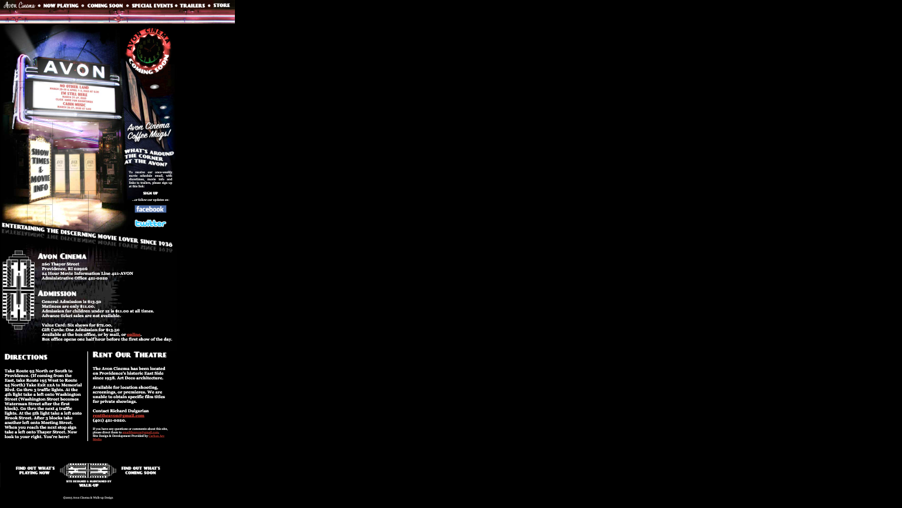
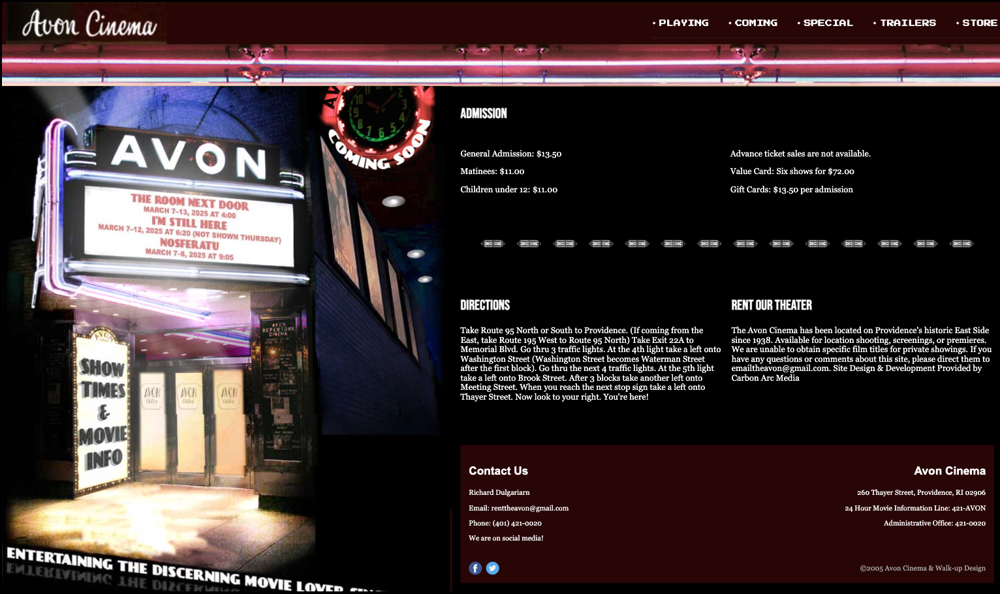
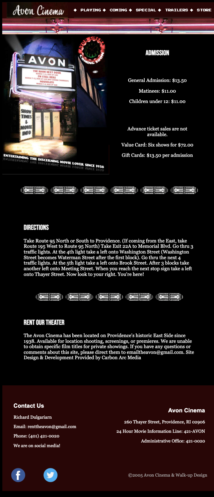
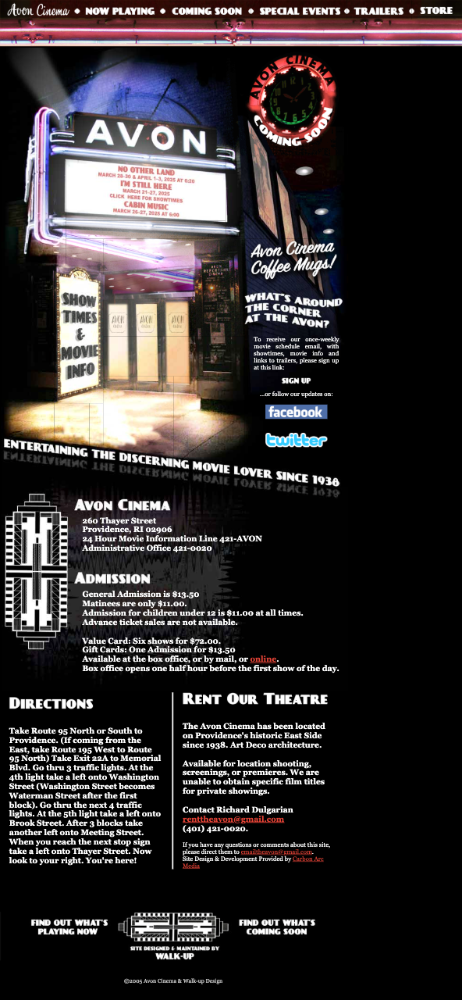
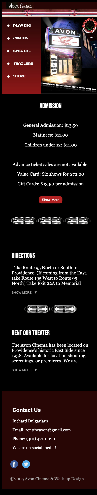

Overview
This project involved a responsive redesign of the Avon Cinema website. The original site had outdated styling, was not mobile-friendly, and had inconsistent structure across breakpoints. My goal was to reimagine the site while preserving its nostalgic cinema feel.
Design Goals
- Make the layout responsive for mobile, tablet, and desktop screens.
- Retain the retro cinema aesthetic with improved visual hierarchy.
- Ensure accessibility and readability across all devices.
- Use modern CSS layout techniques (flexbox/grid).
Redesign Highlights
- Fully responsive layout with optimized mobile and tablet views.
- Cleaner navigation and footer structure.
- Custom JavaScript-powered motif rows that adapt to screen size.
- Improved typography using Google Fonts like
Silkscreen.
Before & After
Original (Desktop View)
Irresponsiveness lead to huge blank space on large devices. The navigation bar is cluttered and hard to read due to the condensed spacing and small font size.
Redesign (Desktop View)
Introduced flexible spacing, modern hover effects, and a cleaner font. The navigation is now responsive and centers well on all screen sizes, improving readability and accessibility.
Original (Tablet View)
Text alignment is inconsistent, and there’s no clear grouping of information. The layout feels cramped, making it difficult to distinguish between categories like ticket prices and policies.
Redesign (Tablet View)
Separated pricing details into columns with consistent spacing and center-aligned them for clarity. T he motif imagery creates visual breaks to guide the user through the page.
Original (Mobile View)
Information is packed tightly into columns with no spacing, especailly the top navigation bar. The typography lacks contrast, and the layout doesn’t adapt to screen size.
Redesign (Mobile View)
Added left navigation bar and visual padding to make directions and contact info scannable. Subsections collapses into a stacked format that’s easy to read.
Reflection
Working on this redesign helped sharpen my responsive design skills. One of the main challenges was balancing aesthetics with functionality across different breakpoints—especially making sure the layout worked well on both mobile and tablet without cluttering the screen. I encountered specific issues with layout shifts, like handling the motif row duplication and ensuring the image counts stayed consistent across sections. I also practiced modularizing code to handle layout issues and improve readability.